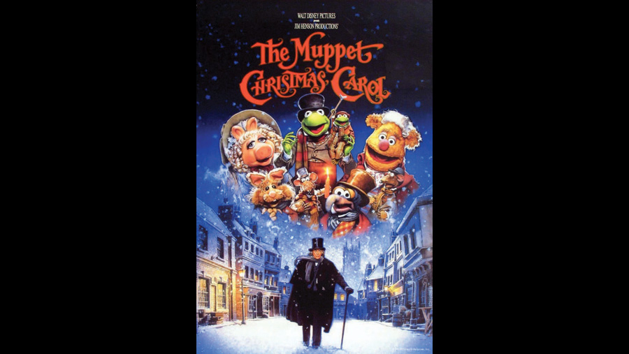

| Character | Actor |
|---|---|
| Ebenezer Scrooge | Michael Caine |
| Bob Cratchit | Kermit the Frog |
| Mrs. Cratchit | Miss Piggy |
| Tiny Tim Cratchit | Robin the Frog |
| Charles Dickens and Narrator | The Great Gonzo |
| Fred (Scrooge's nephew) | Steven Mackintosh |
| Clara (Fred's wife) | Robin Weaver |
| Belle (Scrooge's neglected fiancée) | Meredith Braun |
| Martha Cratchit | Muppet 1 |
| Belinda Cratchit | Muppet 2 |
| Peter Cratchit | Muppet 3 |
| Robert Marley | Waldorf |
| Marley's Ghost | Statler |
| Spirit of Christmas Past | Jessica Fox (voice) |
| Young Scrooge | Edward Sanders, Theo Sanders, Kristopher Milnes, Russell Martin and Ray Coulthard |
| Old Joe | David Shaw Parker (voice) |
| Mrs. Dilber | Louise Gold |
| Old Fozziwig | Fozzie Bear |
| Ma Fozziwig | Ma Bear |
| Fozziwig party entertainer | Animal |
| Fozziwig party cook | The Swedish Chef |
| Schoolmaster | Sam Eagle |
| Charity collector | Dr. Bunsen Honeydew |
| Charity collector | Beaker |
| Co-narrator | Rizzo the Rat |
| Mayor | Lew Zealand |
| Mayor | George the Janitor |
| Role | Person |
|---|---|
| Director | Brian Henson |
| Screenplay | Jerry Juhl |
A 1992 American musical fantasy comedy-drama film produced by Jim Henson Productions and distributed by Walt Disney Pictures. The fourth theatrical film to feature the Muppets, and the first to be produced following the death of Muppets creator Jim Henson in 1990. Although artistic license was taken to suit the aesthetic of the Muppets, The Muppet Christmas Carol otherwise follows Dickens's original story closely